2026-10-07 · Godot 4.6.3 · 개발 체크포인트 6
실행 가능한 독창적 턴제 로그라이트입니다. 원작 The Severed Gods와 같은 상용 품질·분량·시각 수준에는 도달하지 않았습니다. 현재는 핵심 전투 루프를 구현한 소규모 캠페인 체크포인트입니다. GitHub 소스 저장소는 공개되어 있으며, 실행 파일의 저장소 배포는 아직 진행 중입니다.
공식 템플릿으로 Windows x64 / Linux x64 실행 파일을 별도 패키징합니다. Linux headless 실행 확인과 native Godot 프로젝트의 화면 플레이를 구분합니다. Windows OS에서의 실행은 미검증입니다.
제공 이미지의 인디고/청록/주황 조명과 석조 폐허 질감을 참조해, 내장 이미지 생성 도구로 독창적인 넓은 전투 안뜰 한 장을 생성했습니다. 원본 1586×992 PNG를 별도 보존하고 같은 해상도의 WebP를 게임에 적용했습니다.
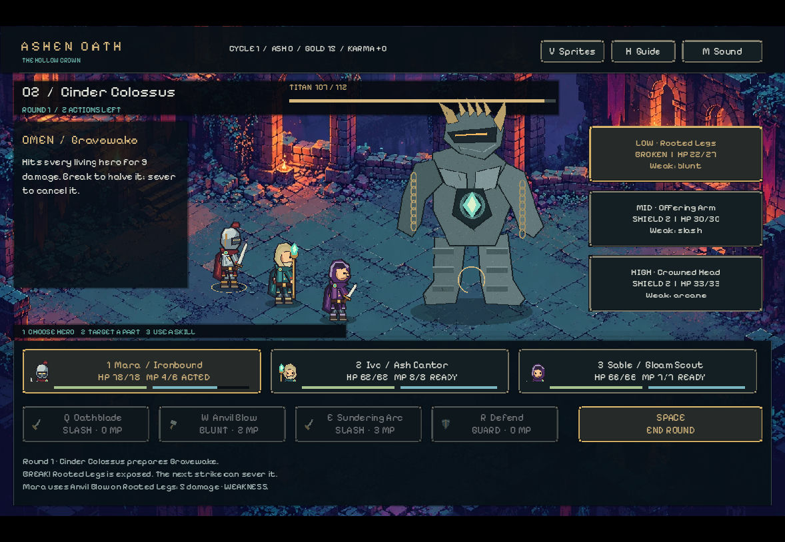
직접 입력: 새 여정 → 캠프 무기 강화 → 2구간 전투 → W Anvil Blow. MP6→4, 실드 파괴 및 부위HP27→22를 확인했습니다. 최종 대비 수정 후 새 실행 창에서 Resume하여 동일 상태를 확인했습니다. 배경 전체를 어둡게 하지 않고 제목/라운드와 작은 조작 안내 뒤에만 어두운 띠를 넣었습니다.
바닥 원근과 발 그림자를 검토했으며 세 영웅과 보스가 열린 바닥 위에 위치합니다. 벽·불꽃이 발이나 주요 행동 버튼을 가리지 않습니다. 그림은 정적이고 생성 이미지의 세밀함에 비해 기존 보스는 단순합니다. 정확한 픽셀 그리드, 역동적 조명 또는 원작 동등성을 주장하지 않습니다.
검사 통과: 규칙78, UI82, 저장7, 애니메이션1131, 캠페인50시드. 새 native export는 미완료입니다. 공식 템플릿 복구 상태 확인이 취소되었고 허용된 동일 재시도에서 세션이 사라진 것으로 확인되었습니다. 읽기 검사에서 Windows/Linux 템플릿 모두 없었습니다. 기존 실행 파일 백업은 체크포인트5이며 이번 새 배경을 포함하지 않습니다.
기존의 단순 실루엣 배경과 모든 사건에 반복되던 거대 석상을 제거했습니다. 기존 세 환경 배경, 픽셀 테두리·글꼴, 영웅 초상화·HP/MP 바를 지도와 사건에도 적용했습니다. 새로 그린 캠프 화로·신전·순례자·보물함은 256×192 투명 PNG, 논리 출력 512×384입니다. 게임 규칙과 분량은 바꾸지 않았습니다.
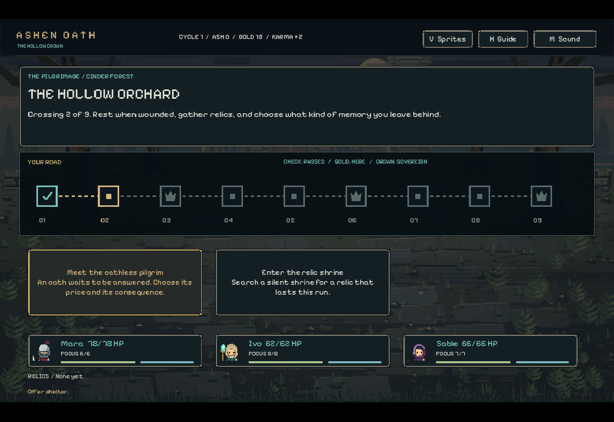
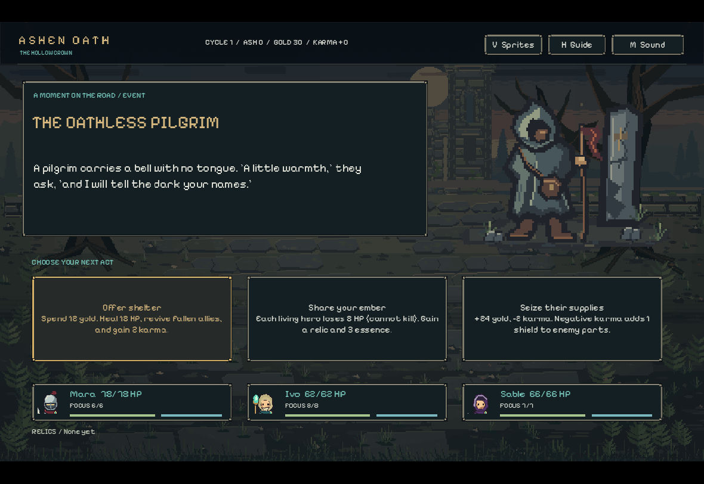
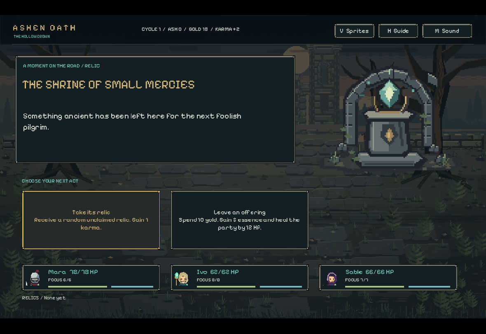
시각 검토: 서사와 선택지가 배경 질감에 묻히지 않으며 카드/글꼴/팔레트가 전투와 일관됩니다. 삽화와 환경은 정적이고, 석상 보스 디테일·유기적인 움직임·원작의 입체 조명과 분량 차이는 남습니다. 전체 품질 동등성이나 98%를 의미하지 않습니다.
세 영웅 × 네 방향 × 31프레임 = 372프레임. 96×112 RGBA 셀과 (48,101) 발 기준점을 공유합니다. Idle 6@6fps, Walk 8@10fps, Attack 8@12fps, Hurt 3@10fps, Death 6@8fps. 좌우는 독립 투영이며 무기 손·견장·팔 가림 순서를 유지합니다. 공격/피격은 idle로 복귀하고 사망은 마지막 프레임에 멈춥니다.
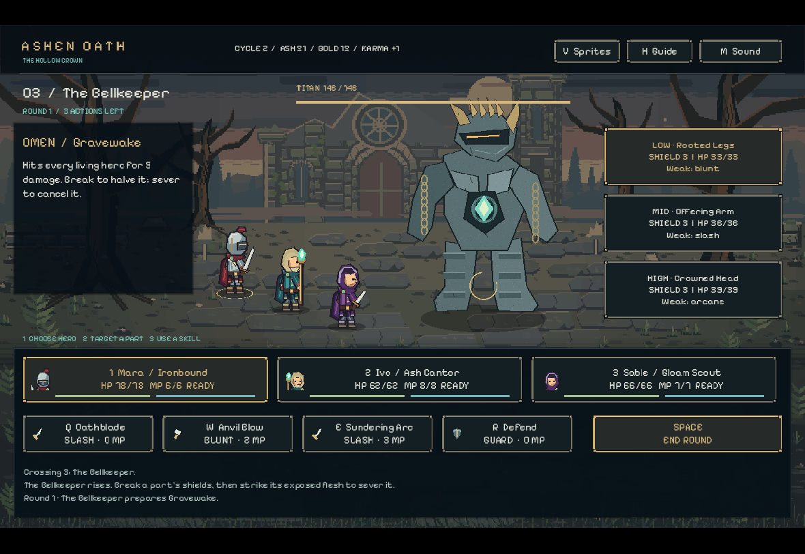
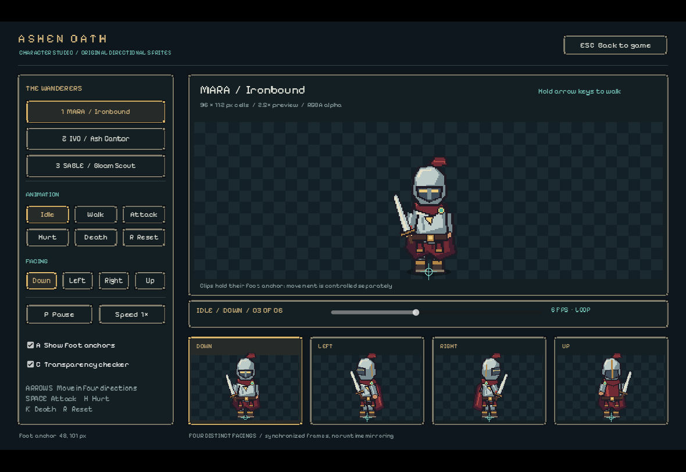
규칙 78, UI 57, 저장 7, 애니메이션 1,131 검사 및 50개 시드 통과. Windows/Linux export 성공, Linux headless와 실제 실행 파일 모두 실행 확인. Windows OS 실행·청취 평가는 여전히 미검증입니다. 아래 전체 캠페인 완주는 이전 체크포인트의 증거이며, 이번 아트 변경 후 새로 전체 완주한 것처럼 해석하면 안 됩니다.
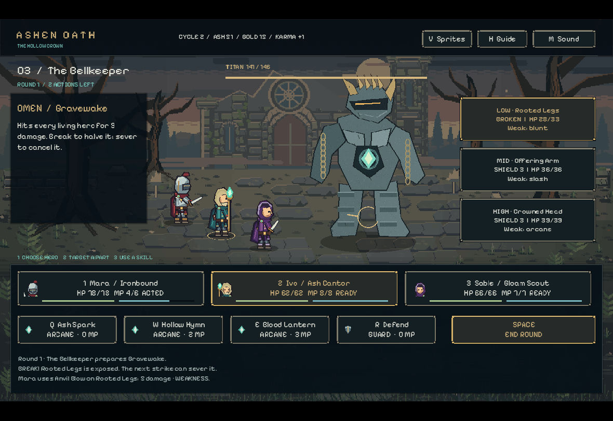
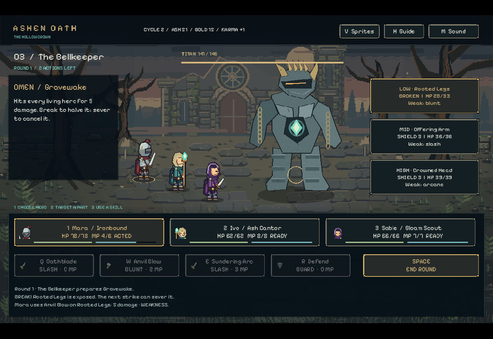
| 기준 | 이번 개선 | 남은 차이 |
|---|---|---|
| 픽셀 크기·팔레트 | 세 영웅 동일 셀/아웃라인, 제한된 재질 팔레트와 픽셀 UI | 전체 창의 비정수 배율에서는 픽셀 폭이 불균일할 수 있음. 적은 영웅보다 큰 픽셀 단위 |
| 재질·입체감 | 금속·천·가죽 하이라이트, 벽돌·수풀·석판 군집, 전후경 명도 분리 | 참고 캐릭터의 정교한 수작업 묘사, 원작의 2.5D 조명·공간감에는 미달 |
| 애니메이션 | 독립 네 방향, 걷기/공격/피격/사망, 발 고정과 공격 이벤트 | 일부 idle/contact 포즈 반복. 개별 스킬 전용 동작과 유기적인 관절 연결이 부족 |
| 전투 정보 | OMEN/부위/약점/행동/MP 상태 계층, 대비 있는 테두리와 속성 아이콘 | 영어만 지원, 작은 픽셀 글꼴은 취향·접근성 한계. 지도/사건은 체크포인트 5에서 개선. 삽화/배경은 정적 |
| 적·콘텐츠 | 기존 파괴/절단 시각과 캠페인 유지 | 석상형 보스 형태 다양성·디테일과 전체 분량의 큰 격차 |
품질 점수나 98% 유사도 수치를 산출하지 않았습니다. 실제 참고 이미지와 공식 Steam 스크린샷에서 보이는 수준과 동등하다는 주장은 하지 않습니다.
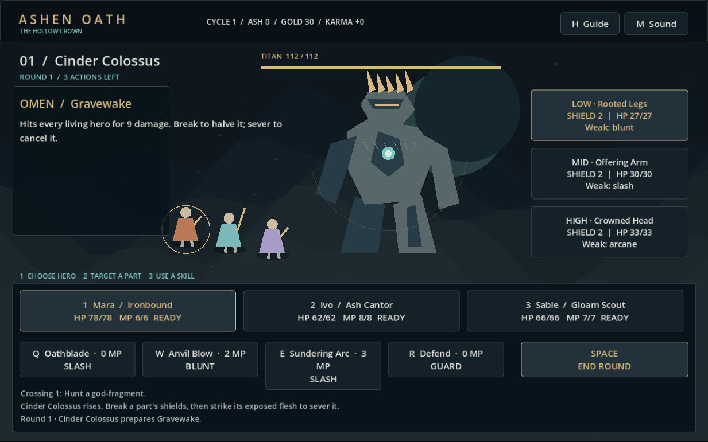
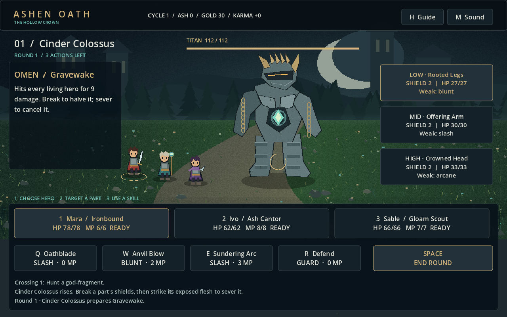
2026-10-07 17:35 UTC에 전체 9구간과 3보스를 실제 키보드·마우스로 완주했습니다. 중단된 세션의 상태를 다시 확인해 이어서 플레이했으며, 승리 화면에서 Ash 51 / Gold 153 / Karma +11을 확인했습니다. 원작과 동등한 품질이나 98% 달성을 의미하지 않습니다. 소리 청취 평가는 미실행입니다.
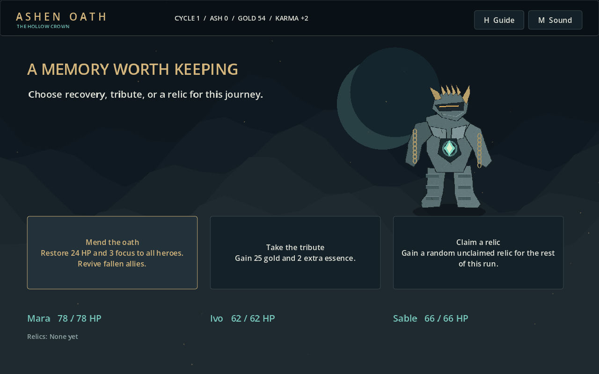
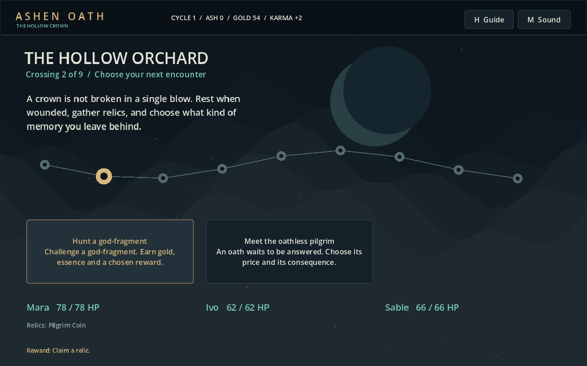
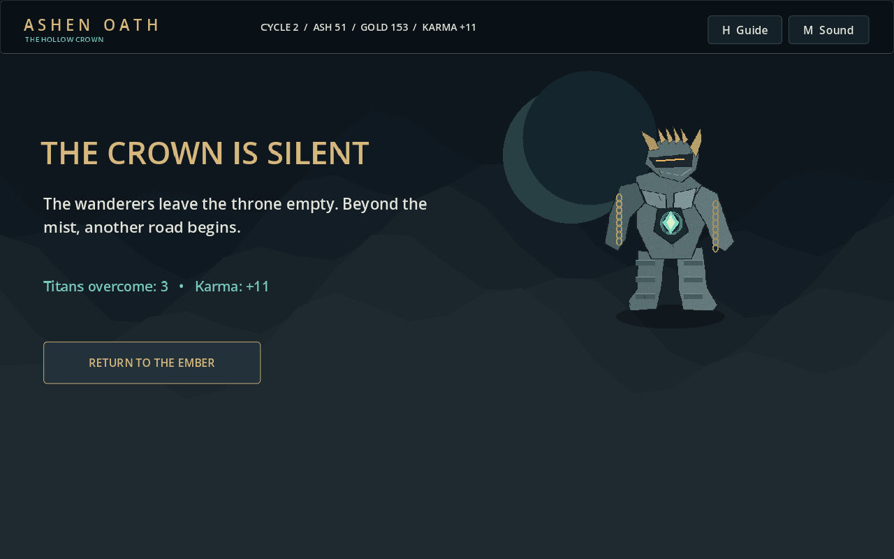
추가 플레이: 첫 보스 → 캠프의 무기 강화 → 두 번째 보스에서 변경된 약점에 맞춘 영웅 순서 → 신전 유물 → 최종 캠프 → 마지막 보스의 세 부위 절단 → 마지막 보상 → 승리. 보스의 공격 취소/파괴에 따른 절반 피해/일반 피해도 화면으로 확인했습니다.
Steam 공식 appdetails에서 제공한 스크린샷 1·2를 직접 확인했습니다. 공식 전투 화면 1 · 공식 전투 화면 2. 해당 이미지는 게임 에셋으로 포함하거나 픽셀을 복사하지 않았습니다.
| 기준 | 확인한 원작 | 현재 구현/판정 |
|---|---|---|
| 공간·조명 | 풍부한 2.5D 지형, 대기감, 심도와 조명 | 질감 있는 2D 레이어와 원근 도로. 개선됐지만 큰 차이 |
| 캐릭터·적 | 상세 픽셀 영웅, 다양한 생물형 거대 적 | 직접 만든 영웅 3종, 석상 계열 3팔레트. 형태·표현 다양성 부족 |
| 전투 가독성 | 부위별 높이/실드, 행동 순서, 상세 명령 UI | 부위/실드/약점/예고와 행동 수 표시. 연속 턴 순서·전투 UI 방식은 다름 |
| 파괴·절단 | 부위 파괴로 적 행동 제한 | 실드 파괴 후 절단, 해당 행동 취소. 실제 플레이 확인 |
| 연출 | 상세 캐릭터 표현과 상용 화면 구성 | 투사체·타격 입자·피해 숫자·간단한 움직임. 애니메이션 품질 격차 |
| 분량·성장 | 공식 페이지의 다수 영웅/세계/스킬/유물 | 9구간, 영웅 3명, 유물 5종, 강화 3종. 분량 대폭 축소 |
godot --headless --path . --script res://selftest.gd godot --headless --path . --script res://ui_selftest.gd godot --headless --path . --script res://campaign_stress.gd godot --headless --path . --script res://resume_selftest.gd godot --headless --path . --script res://animation_selftest.gd
빌드 방법은 BUILDING.md, 조작은 README.md, 자산 출처는 PROVENANCE.md, 원시 로그와 실제 캡처는 verification 폴더에서 확인할 수 있습니다.